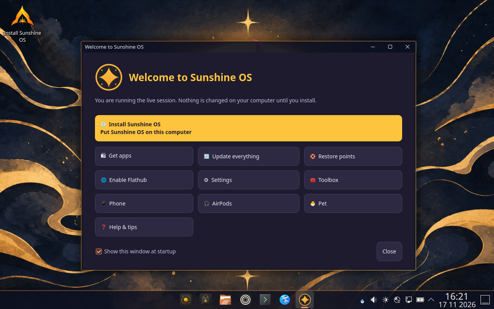
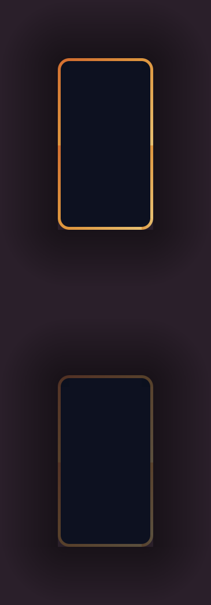

Sunshine theme
Dark smoked glass with an orange-amber-gold gradient rim. Midnight navy surfaces, warm white text, burnt orange selection. Screenshots from the live system.
Application launcher

Navy glass at 86%, gradient rim, 12 px corners, orange outlined search field, taskbar with a rim line at 78%.
Desktop

Window frame (gradient rim, rounded, soft shadow, active and inactive)

Palette
#E87932 burnt orange (accent)
#F5A442 amber
#FFD27A gold (highlights)
#F5A442 amber
#FFD27A gold (highlights)
#0B1020 midnight navy
#151729 deep indigo
#191923 glass
#24202A elevated
#151729 deep indigo
#191923 glass
#24202A elevated
#F4F0EB warm white text
#AAA3A0 secondary
#69636A disabled
#AAA3A0 secondary
#69636A disabled
Notes
Window corners are 4 px: KWin's Aurorae cannot round a frame more than its border width, so the specified 10 px needs a KWin effect and is tracked on the roadmap. Blur is enabled in kwinrc; the VM has no GPU compositing so blur is not visible in these screenshots.